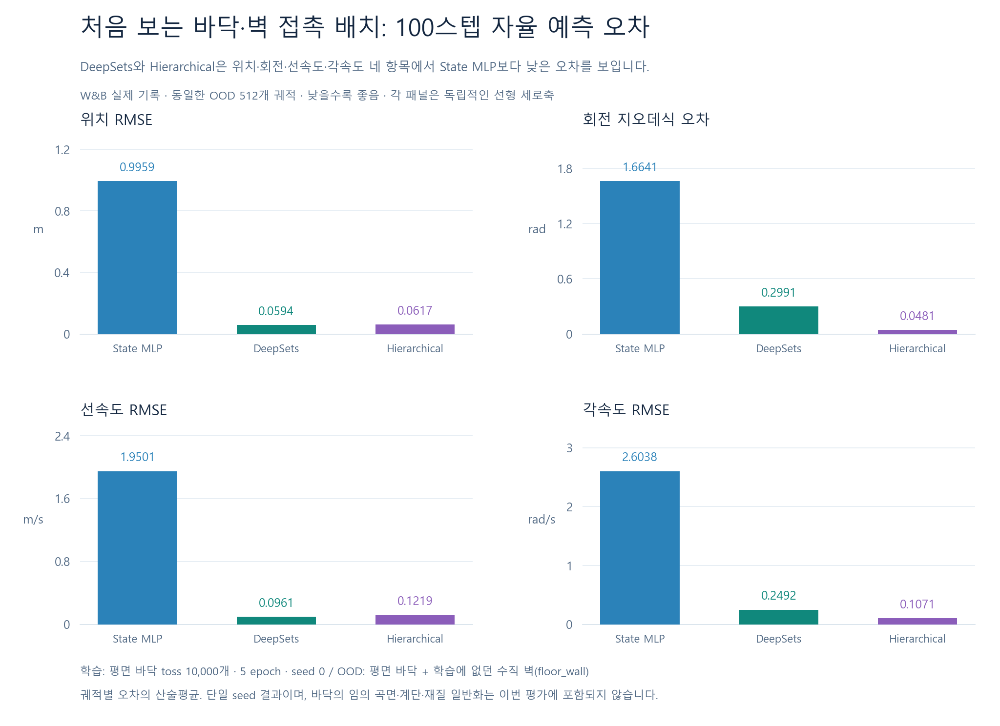

이 페이지는 이전 OOD v1 평가 기록입니다. 새 OOD v2 모델 평가 완료: 벽 투척 500개와 각 평면 10°인 V자 바닥 500개에서 contact_mlp를 포함한 네 모델을 평가했습니다. 새 OOD v2 모델 오차·조건별 비교와 OOD v2 GT 갤러리를 확인하세요. 아래 W&B v1 지표와 본문은 이전 평가 기록이며 새 v2의 성능을 뜻하지 않습니다.
이전 OOD v1 · 학습에 없던 바닥·벽 배치
새로운 환경 구성에서도,
포인트 기반 모델의 예측 오차가 더 작습니다.
학습에 포함하지 않은 바닥–벽 동시 접촉 조건에서 DeepSets와 계층형 모델은 모두 state_mlp보다 낮은 위치·회전·선속도·각속도 오차를 기록했습니다. W&B에 로깅한 동일 평가 수치를 별도 막대 그래프로 비교합니다.
일반 투척 시각화 6개와 별개의 평가입니다. 1,000개 OOD 중 동일하게 선택된 512개를 비교하며, 기준 모델·DeepSets·계층형 모두 같은 ID와 rollout 길이를 사용합니다.
OOD 막대 그래프: 두 모델 모두 기준 오차를 낮췄습니다
모든 막대는 0에서 시작하는 선형 축입니다. 지표별 단위를 분리했고, 낮은 막대가 작은 오차를 뜻합니다. 기본 보기는 자신의 예측을 다음 입력으로 사용하는 100스텝 자율 rollout입니다.

각 OOD 평가가 의미하는 것 · 한 문장 주석
한 스텝 예측: 매 시점 정답 상태에서 다음 순간을 예측해, 낯선 접촉 구성의 즉각적인 상태 변화를 읽는지 확인합니다.
100스텝 자율 rollout: 자신의 예측을 2초 동안 다음 입력으로 사용해, 미지 환경에서 움직임과 누적 오차가 어떻게 전개되는지 확인합니다.
충돌 순간: 실제 충돌로 표시된 시점의 한 스텝 오차만 모아, 새로운 표면에 부딪힐 때 상태 변화를 예측하는지 확인합니다.
지속 접촉: 표면에 계속 닿아 있는 구간의 한 스텝 오차만 모아, 접촉이 유지될 때의 지지·이동·회전을 예측하는지 확인합니다.

DeepSets
94.0% 감소100스텝 위치 RMSE: 0.99594 → 0.05936 m
계층형 · hierarchical
93.8% 감소100스텝 위치 RMSE: 0.99594 → 0.06165 m
| 모델 | 위치 RMSE | 회전 거리 평균 | 선속도 RMSE | 각속도 RMSE |
|---|---|---|---|---|
| state_mlp | 0.99594 m기준 모델 | 1.66415 rad기준 모델 | 1.95006 m/s기준 모델 | 2.60383 rad/s기준 모델 |
| deepsets | 0.05936 mstate_mlp 대비 94.0% 감소 | 0.29907 radstate_mlp 대비 82.0% 감소 | 0.09607 m/sstate_mlp 대비 95.1% 감소 | 0.24915 rad/sstate_mlp 대비 90.4% 감소 |
| hierarchical | 0.06165 mstate_mlp 대비 93.8% 감소 | 0.04814 radstate_mlp 대비 97.1% 감소 | 0.12188 m/sstate_mlp 대비 93.8% 감소 | 0.10710 rad/sstate_mlp 대비 95.9% 감소 |
강조할 결과: 학습에 없던 바닥–벽 접촉 배치에서 DeepSets와 계층형 모두 state_mlp보다 네 가지 상태 예측 오차가 낮습니다. 이는 환경의 표면 정보를 사용하는 모델이 새로운 접촉 구성에 대응하는 방향을 뒷받침하는 현재의 관측 결과입니다.
하나의 seed와 현재 OOD 조건의 결과입니다. 낮은 상태 예측 오차가 모든 접촉 진단의 개선을 뜻하지는 않습니다. 예를 들어 두 포인트 모델의 최대 관통량 지표는 state_mlp보다 큽니다. 구덩이·융기나 임의의 장애물까지 검증한 결과는 아닙니다.
접촉 진단도 함께 확인하기
| 모델 | 평균 관통량 | 사례별 최대 관통량의 평균 | 접촉 불일치율 |
|---|---|---|---|
| state_mlp | 0.00930 m | 0.06896 m | 78.85% |
| deepsets | 0.06253 m | 0.10617 m | 2.14% |
| hierarchical | 0.07148 m | 0.10600 m | 2.00% |
세 지표 모두 낮을수록 좋으며, 상태 예측 오차의 개선과 별도로 물리적 접촉의 타당성을 점검합니다.
이번에 보지 못했던 것은 어떤 환경일까요?
학습: 평평한 바닥 위의 랜덤 투척
train은 toss 10,000개입니다. 랜덤 위치·회전·초기 선속도·각속도에서 출발하며 모든 action은 0입니다.
OOD: 바닥과 벽이 함께 만드는 접촉
floor_wall은 평평한 바닥에 수직 벽이 추가된 별도의 접촉 진단입니다. 바닥의 곡률이나 높낮이를 바꾼 구덩이·융기 환경은 아닙니다. 초기 상태 분포도 투척과 달라, 이 실험만으로 순수한 지형 형상 효과를 분리한 것은 아닙니다.
오른쪽은 이번 OOD 평가에 포함된 ID 12426의 저장된 GT 재생입니다. 모델 예측 영상이 아니라 평가 환경과 실제 움직임을 확인하기 위한 자료입니다.
목표는 단순 경사 변화보다 복잡한 지형에 있습니다
단순히 하나의 평면을 기울이는 것만으로 표현되지 않는 구덩이·융기, 그리고 경험하지 못한 장애물에도 반응하는 NeRD를 만드는 것이 목표입니다.
위치마다 바닥 높이와 법선, 지지 영역, 접촉의 수·시점이 달라질 때, 환경의 실제 표면을 입력받아 물체가 어떻게 움직일지를 예측해야 합니다. 현재 바닥–벽 OOD는 이 목표를 향한 첫 접촉 구성 검증이며, 구덩이·융기에서의 성능은 다음 평가 대상으로 구분합니다.
NeRD 연구 목표 페이지 열기 ↗DeepSets 구조·학습·영상으로 돌아가기W&B에 기록한 항목과 재현 근거
모델별 W&B 실행
- state_mlp · W&B run ho8x2ocw ↗
- deepsets · W&B run mw6m4q10 ↗
- hierarchical · W&B run vdhco8cv ↗
W&B 온라인 run.summary를 읽어 네 가지 평가 × 네 가지 지표 × 세 모델의 48개 값을 저장된 원본 평가와 대조했습니다. 모든 값이 수치 허용오차 안에서 일치하며, 조회 근거는 출처 JSON에 기록했습니다.
막대 그래프의 로깅 키
ood/rollout/position_rmseood/rollout/rotation_geodesic_radood/rollout/linear_velocity_rmseood/rollout/angular_velocity_rmse
다른 보기에서는 ood/one_step/…, ood/impact/…, ood/persistent_contact/… 값을 사용합니다. 실제 로깅 코드는 src/cube/experiments/protocols.py::_evaluation_scalars입니다.
원본 평가: outputs/cube-toss-suite-final/{model}_budget10000_seed0/ood/evaluation.json
재현 자료: docs/assets/ood-comparison/ood-data.json